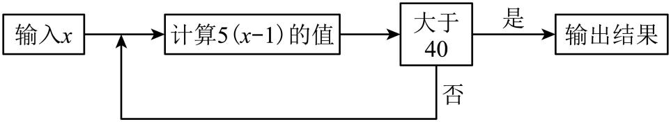
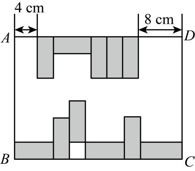
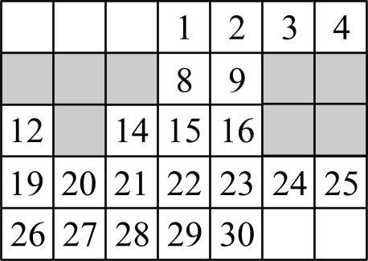

第五章 一元一次方程·拔尖卷
【北师大版2024】
时间：120分钟 满分：120分
姓名：___________班级：___________考号：___________
考卷信息：
本卷试题共24题，单选10题，填空6题，解答8题，满分120分，限时120分钟，本卷题型针对性较高，覆盖面广，选题有深度，可衡量学生掌握本章内容的具体情况！
第Ⅰ卷
一．选择题（共10小题，满分30分，每小题3分）
1．（3分）已知m−2x|m−1|−5=8是关于x的一元一次方程，则m=（ ）
A．0或2 B．1或−1 C．2 D．0
2．（3分）若3a−2b=5，则下列等式中不一定成立的是（ ）
A．3a−5=2b B．3a+1=2b+6 C．3ac=2bc+5 D．a=23b+53
3．（3分）（24-25七年级上·重庆·阶段练习）按照下面的程序计算：当输入x为32时，输出结果为155；当输入x为11时，输出结果为245；若输入的x的值为正整数，输出结果为45，那么满足条件的x的值最多有（ ）

A．1个 B．2个 C．3个 D．4个
4．（3分）某同学在解方程2x−12=x+a2−1去分母时，方程右边的−1没有乘以2，因而求得方程的解为x=5，则a的值和方程的正确的解分别是多少？( )
A．a=5，x= 43 B．a=2，x=0 C．a=5，x=4 D．a=4，x=−5
5．（3分）（24-25七年级上·陕西西安·期末）若关于x的方程k−3x=6−2x+1的解为整数，则满足条件的所有整数k的和为（）．
A．10 B．-4 C．4 D．6
6．（3分）（24-25七年级上·湖北·阶段练习）如图是由“幻方”游戏创新改成的“幻圆”游戏．现将−1，2，−3，4，−5，6，−7，8分别填入图中的小圆圈内，使图中横、竖两线上以及内、外两圆上的4个数字之和都相等，则图中a+b的值为（ ）

A．−6或−3 B．−8或1 C．−1或−4 D．1或−1
7．（3分）（24-25七年级上·广东广州·阶段练习）在一个圆形跑道上，小华与小明分别从一条直径的两端同时出发，相向而行，第一次相遇时，小华走了80米．相遇后，两人继续向前行走，在小明还差55米就走完一圈时，与小华再次相遇，这个圆形跑道的周长是（ ）米．
A．370 B．260 C．420 D．350
8．（3分）（24-25七年级下·福建泉州·期中）定义：如果两个一元一次方程的解之和为1，我们就称这两个方程为“美好方程”．例如：方程2x−1=3和x+1=0为“美好方程”．若关于x的方程12025x+1=0与12025x−1=2x+k是“美好方程”，则关于y的方程12025y+2−1=2y+k+4的解为（ ）
A．y=2024 B．y=2025 C．y=2026 D．y=2027
9．（3分）（24-25七年级上·天津·阶段练习）关于x的方程x3⋅a=x2−16x−6无解，则a的值是（ ）
A．1 B．−1 C．±1 D．a≠1
10．（3分）已知m，n为常数，关于x的方程3kx+m2=1+x−nk3，无论k为何值，它的解总是x=2，则mn的值为（ ）
A．−45 B．−30 C．−27 D．−18
二．填空题（共6小题，满分18分，每小题3分）
11．（3分）已知8m+3n+2=4m+7n，利用等式的性质比较m与n的大小关系：m n（填“>”“<”“=”）
12．（3分）已知关于x的方程ax=3x+b−2(a，b为常数）有无数个解，则a−b=
13．（3分）（24-25七年级上·陕西西安·阶段练习）若关于x的方程−x+2x−k=3x的解是方程x0.4−3=12x的解的2倍，则k= ．
14．（3分）（24-25七年级上·吉林松原·期中）小明在做解方程作业时，不小心将方程中的一个常数污染了看不清楚，被污染的方程是2y−12=y−▄，怎么办呢？小明想了想便翻看了书后的答案，此方程的解是y=−32他很快就补好了这个常数，这个常数应是 ．
15．（3分）（24-25七年级下·江苏南通·期中）如图，在长方形ABCD中，放入11个形状、大小相同的小长方形，所标尺寸如图所示，已知每个小长方形的长比宽的4倍少1cm，则小长方形的长为 cm．

16．（3分）（24-25七年级上·全国·期末）已知一艘船在静水中的速度为每小时26千米，船沿江从A港逆流行驶至B港用时，比从B港返回A港多用3个小时，已知水流的速度为每小时2千米，则A港到B港的距离是 千米．
第Ⅱ卷
三．解答题（共8小题，满分72分）
17．（6分）（24-25七年级上·陕西安康·阶段练习）解下列方程．
(1)x6−30−x4=5；
(2)3x0.5−1.4x0.4=5x−76．
18．（6分）（24-25七年级上·陕西咸阳·阶段练习）定义：如果两个一元一次方程的解之和为2，我们就称这两个方程为“成双方程”．例如：方程2x−1=2和2x−1=0为“成双方程”．
(1)请判断方程4x−(x+5)=1与方程−2y−y=3是否为“成双方程”；
(2)若关于x的方程x2+m=4与方程3x−2=2x+4互为“成双方程”，求m的值．
19．（8分）（24-25七年级上·山西吕梁·阶段练习）山西某中学举行英语对话听力挑战赛，每位选手共挑战4轮，每轮4个题目，每轮结果呈现形式为m:n（其中答对m题，答错n题），每种不同的结果产生的积分也不相同．甲、乙、丙三位同学的挑战结果如下表：
第1轮 | 第2轮 | 第3轮 | 第4轮 | 总积分 | |
甲 | 3:1 | 2:2 | 3:1 | 2:2 | 8 |
乙 | 2:2 | 2:2 | 2:2 | 2:2 | 4 |
丙 | 1:3 | 2:2 | 1:3 | 3:1 | −2 |
(1)结果为2:2，积___________分；结果为3:1，积___________分．
(2)设1:3的结果积x分，请利用方程的知识，求x的值．
20．（8分）（24-25七年级上·陕西宝鸡·期中）如图，数轴上A，B两点所对应的数分别是a，b，其中a＝−3+18÷−3×13，b＝−22−12×−6．
(1)求a，b的值；
(2)求A，B两点之间的距离；
(3)一动点C从点A出发，以每秒2个单位长度的速度沿数轴向右运动，另一动点D从点B出发，以每秒1个单位长度的速度沿数轴向左运动．若点C，点D同时出发，在数轴上点N处相遇，求点N对应的有理数．
21．（10分）（24-25七年级上·河北唐山·期末）为开展好校园足球活动，某些学校计划联合购买一批足球运动装备，经市场调查，甲，乙两商场分别以同样的价格出售同种品牌的足球队服和足球．已知每套队服比每个足球贵20元，购买一套队服和一个足球共需花费180元．
(1)求每套队服和每个足球的售价分别是多少？
(2)甲商场推出的优惠方案是：每购买10套队服，送一个足球；乙商场推出的优惠方案是：若购买队服超过90套，则队服原价，但购买足球打八折．若计划一共购买100套队服和m（m>10）个足球．
①请用含m的代数式分别表示出到甲商场和乙商场购买装备所花的费用；
②若学校的预算是12000元，选择在哪家商场购买的足球更多？
③请你说明m为何值时 ，两家商场费用相同？
22．（10分）（24-25七年级上·黑龙江哈尔滨·期末）【阅读理解】使方程左、右两边的值相等的未知数的值，叫作方程的解．如x=6是方程3x=18的解．已知方程3a−1=18，若把a−1看作一个整体，则a−1=6；已知方程3b+2=18，若把3b+2看作一个整体，则3b+2=6．
【尝试运用】
（1）已知方程34m+5=18，则4m+5的值为 ；
（2）已知方程3n−72024=18，则n−72024的值为 ；
【拓展创新】
（3）已知关于x的一元一次方程12024x+3=2x+b的解为x=2，求一元一次方程y+3+6072=4048y+3+2024b的解．
23．（12分）如图是2023年11月的月历，“T”型、“田”型两个阴影图形分别覆盖其中四个方格（可以重叠覆盖），设“T”型阴影覆盖的最小数字为a，四个数字之和为S1，“田”型阴影覆盖的最小数字为b，四个数字之和为S2．

(1)S1的值能否为103？若能，求a的值；若不能，说明理由；
(2)S1+S2值能否为55，若能，求a，b的值；若不能，说明理由；
(3)若S1−S2=−13，求S1+S2的最大值．
24．（12分）（24-25六年级下·上海黄浦·期中）某商场进了20台A、B、C三种型号的冰箱，根据下表提供的信息，解答以下问题：
冰箱类型 | A | B | C |
购进的台数（台） | 8 | 6 | |
每台冰箱的销售价（元） | 2000 | 3000 |
(1)商场购进A型号冰箱______________台；
(2)每台A型号冰箱的销售价比每台C型号冰箱的销售价便宜20%．
①每台C型号冰箱的销售价是_______________元；
②如果每台A、B两种型号冰箱的成本价之比是2:3，每台C型号冰箱的成本价比每台B型号冰箱的成本价少500元，且每台C型号冰箱的成本价比每台A型号冰箱的成本价多300元，则每台C型号冰箱的成本价是多少元？每台C型号冰箱的盈利率是多少？（百分号前保留一位小数）
③如果要使A、B两种型号冰箱的总利润达到6000元，那么需要销售A种型号冰箱______________台．